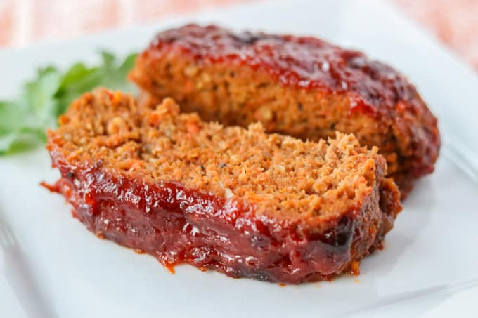

Easy Meatloaf

More About Easy Meatloaf
It is usually made with ground beef, although ground lamb, pork, veal, venison,
poultry, and seafood are also used, sometimes in combination
Ingredients
- An egg
- A cup of milk
- 1 onion, chopped
- Cup of dried bread crumbs
- Salt and pepper to taste
Steps
- Preheat oven to 350 degrees F (175 degrees C)
- In a large bowl, combine the beef, egg, onion, milk and bread OR cracker crumbs
- In a separate small bowl, combine the brown sugar, mustard and ketchup
- Bake at 350 degrees F (175 degrees C) for 1 hour
Home